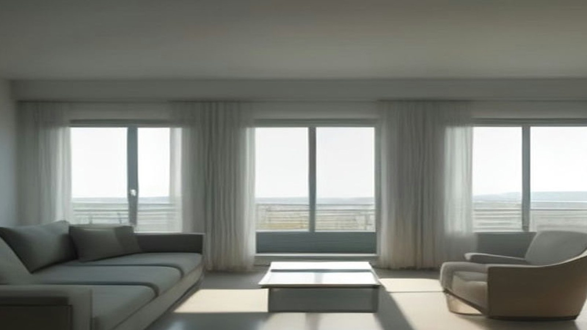
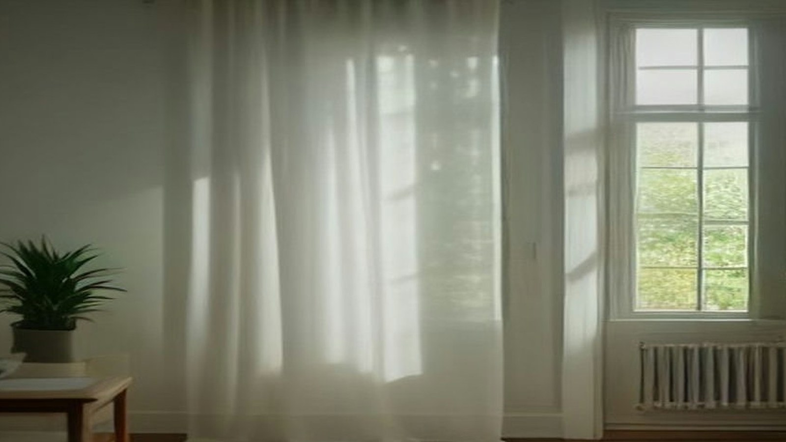

第二人生，
不是退場，是換場。
退休、置業、醫療 —— 一小時生活圈的完整安排。
為考慮在珠海、中山生活的香港家庭而設。先把數字攤開，您看完了，再決定。
所有數字附公開來源·先諮詢、後決定·不催促、不硬銷
以上數字可於風險與資料來源頁逐項核對；收費區間屬行業統計，個別院舍差異可以很大。
所有查詢均由顧問本人接洽，回覆時間視實際情況而定。
香港退休面前，有三組數字
輪候資助護理安老宿位的平均時間（津助及合約院舍）。截至 2026 年 1 月底，中央輪候冊上有 17,894 人。
香港私營安老院的每月收費區間，視地區、房型與護理程度而定。合約院舍及自負盈虧院舍的非資助宿位，可達每月 HK$12,000 至 60,000。
截至 2024 年中，已定居廣東省的 65 歲或以上香港長者人數，十年間增加約 40.5%。
資料來源：社會福利署《輪候資助長者住宿照顧服務的人數》(2026-01)；長者服務資訊網《香港老人院收費參考 2026》；立法會《數據透視》(2025-09)。收費區間屬行業統計，個別院舍差異可以很大。
距離，已經不是原來的距離
子女探望、返港覆診、週末飲茶 —— 這些實際的顧慮，決定的不是「去不去」，而是「多遠」。
港珠澳大橋穿梭巴士（金巴）口岸至口岸的車程。金巴 24 小時營運，繁忙時段每 5 分鐘一班。
深中通道通車後，深圳至中山的車程（由原來約 2 小時縮短）。全長約 24 公里。
深中通道通車後，中山往返香港的跨境大巴車程（由原來約 2 小時 30 分縮短）。
資料來源：港珠澳大橋穿梭巴士（金巴）官方網站；深中通道通車報道（2024-06-28）。「香港市區至中山／珠海的門到門時間」暫無權威官方數字，故不列出。
同一個預算，可以買到什麼
| 項目 | 香港 | 中山 | 珠海 |
|---|---|---|---|
| 資助安老院月費 | HK$1,600 – 2,060 惟輪候極長 | — | — |
| 私營／指定院舍月費 | HK$7,000 – 25,000+ | ¥5,000 – 6,000 火炬區頤康 | ¥3,500 – 4,500 和園頤養 |
| 商品住宅單價（每平方米） | — | 2025 年約 ¥11,140 官方統計 | 2025 年網簽均價約 ¥19,940 |
| 兩房單位月租中位數 | — | 官方數字待補 | 官方數字待補 |
官方數字待補 — 中山及珠海的住宅月租中位數，目前只找到零散個案，並無官方或主流地產統計，因此留空而不以估算填補。

資料來源：社會福利署《指定安老院的院費概況》(2025-09)（多人房、未計前期一次性收費）；中山市國民經濟和社會發展統計公報（轉引南方日報，2026-06-12）；中原澳門及珠海橫琴《2025 年樓市回顧》(2026-01-06)。
醫療怎樣過河，照顧怎樣安排
政府「廣東院舍照顧服務計劃」
2026 年 7 月起認可院舍增至 29 家。截至 2026 年 2 月底，共為 1,048 名香港長者提供資助院舍照顧服務。
入住後毋須支付食宿費、護理及個人照顧費、基本醫療費。
長者醫療券大灣區試點
已覆蓋大灣區九個內地城市，共 21 個服務點。珠海可用：中山大學附屬第五醫院、珠海市人民醫院；中山可用：陳星海中西醫結合醫院、中山市中醫院。
截至 2025 年 3 月底，逾 26,900 名長者曾使用，涉及 250,341 宗交易。
使用前必須知道的限制
- 醫療券不可與國家醫保同時支付同一次服務；不包括住院、須預先繳費的服務及日間手術；不可用於單純購買物品、藥物或儀器。
- 跨境直通救護車試行計劃現時只涵蓋深圳（港大深圳醫院）及澳門（仁伯爵綜合醫院）指定派送醫院，且不涵蓋急症個案。
- 政府明確表示，香港公營及資助醫療服務以照顧香港本地市民為基礎。

資料來源：社會福利署《廣東院舍照顧服務計劃》網頁；政府新聞公報（2026-06-16）；立法會七題（2026-03-25）；醫療券發展里程；立法會十八題（2025-07-09）。
如果只看好處，這個決定不值得做
- 樓價可以跌。橫琴住宅價格曾由每平方米約人民幣 5.6 萬元跌至約 3.9 萬元，累計跌幅約三成；有港人在中山購入約 400 多呎的公寓，估值由人民幣 70 萬元跌至 30 至 40 萬元。
- 「免院費」不等於不需要自費。尿片、傷口敷料、緊急救護車及計劃外項目均須自付。
- 醫療券不會累積。每年港幣 2,000 元，用不完不會轉入下一年。
- 並非人人適合。若您需要頻繁返港覆診，或不習慣使用內地的電子支付與手機號碼，北上未必適合您。
- 跨境匯款仍有局限。有評論指現時合作銀行選擇狹窄，宜先向銀行核實。
完整的反面事實、資料來源與免責聲明，載於風險披露與免責聲明。
三步，不需要一次決定所有事
了解
索取《灣區第二人生規劃書》，先看數字與政策，不必留下任何個人資料以外的承諾。
實地考察
安排一次實地行程：看院舍、看社區、看醫院，用一天時間換取真實印象，而非聽人轉述。
規劃
把醫療、居住、資產三件事分開處理。哪一項先做、哪一項可以等，由您決定。
您可能想問
「廣東院舍照顧服務計劃」需要資產審查嗎？
不需要。申請人須接受「安老服務統一評估機制」評估，確定服務需要後，即可按評估結果申請。入住後院舍的食宿、護理、個人照顧及基本醫療費用由政府資助。
資料來源：社會福利署《廣東院舍照顧服務計劃》網頁。
內地養老院是否便宜很多？
視乎城市與級別。社署公布的指定院舍參考月費，由惠州約人民幣 3,000 至 4,000 元，到深圳約 7,000 至 8,000 元不等。相對香港私營安老院每月港幣 7,000 至 25,000 元以上，差距可由一半到數倍。
資料來源：社署《指定安老院的院費概況》(2025-09)；長者服務資訊網 (2026)。
內地醫療是否可信？
需要分開來看。內地三甲醫院的設備與專科能力並不弱，但香港醫生未必認受內地非三甲機構的影像診斷報告，臨床責任歸屬亦可能模糊。做法上，建議選擇港資背景或三甲機構、索取原始影像檔案，並保留香港的醫療方案。
資料來源：跨境體檢及報告認受性討論（媒體綜合報道，2025–2026）；立法會跨境醫療合作文件 (2026-07)。
需要先買樓才可以北上養老嗎？
不需要。入住政府資助的指定院舍與是否置業並無關係；置業是另一項獨立決定。我們建議把「居住」與「資產」分開考慮，兩者的風險完全不同。
為什麼網站用示意圖而不用實景照片？
在取得客戶實拍照片之前，我們不願意用來源不明的圖片冒充實景。因此本網站所有圖片均為 AI 生成示意圖，並已逐張標明。取得實拍照片後會逐張替換。